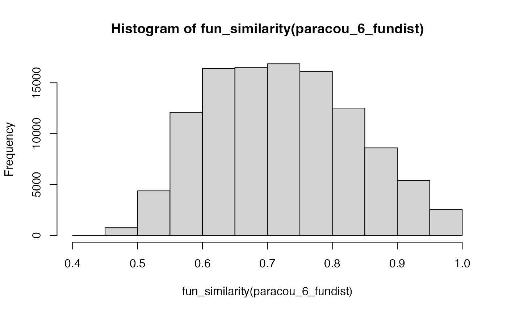

Transform a distance matrix into a similarity matrix Leinster2012divent. Similarity between two species is defined either by a negative exponential function of their distance or by the complement to 1 of their normalized distance (such that the most distant species are 1 apart).
Arguments
- distances
A distance matrix or an object of class stats::dist
- exponential
If
TRUE, similarity is \(e^{-r \delta}\), where \(r\) is argumentrate. IfFALSE, it is \(1 - \delta / \max(\delta)\).- rate
The decay rate of the exponential similarity.
- check_arguments
If
TRUE, the function arguments are verified. Should be set toFALSEto save time when the arguments have been checked elsewhere.
Examples
# Similarity between Paracou 6 species
hist(fun_similarity(paracou_6_fundist))
